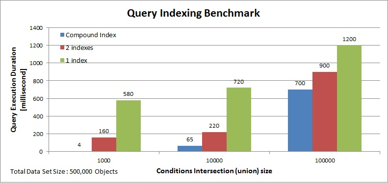

Maintaining a compound index involves usually additional overhead compared to a regular index in terms of time to update the index and its footprint but it may improve query processing time substantially.
Compound indexes can be defined using annotations. The CompoundSpaceIndex and CompoundSpaceIndexes annotations should be used. The annotations are a type-level annotations.
Example: Below a compound index with two segments using annotations. Both are properties at the root level of the space class:
@CompoundSpaceIndexes({ @CompoundSpaceIndex(paths = {"data1", "data2"})})
@SpaceClass
public class Data {
String id;
String data1;
String data2;
// getter and setter methods - no properties need to be indexed
The benchmark has a space with different sets of space objects data:
| Condition | Scenario 1 matching objects | Scenario 2 matching objects | Scenario 3 matching objects |
|---|---|---|---|
| data1 = "A' | 401,000 | 410,000 | 400,000 |
| data2 = "B' | 100,000 | 110,000 | 200,000 |
| data1 = "A' AND data2 = "B' | 1000 | 10,000 | 100,000 |
SQLQuery<Data> query = new SQLQuery<Data>(Data.class,"data1='A' and data2='B'");
With the above scenario the Compound Index will improve the query execution dramatically. See below comparison for a query execution time when comparing a Compound Index to a single or two indexed properties space class with the different data set scenarios.

A Compound Index can be defined within the gs.xml configuration file. Example: The following a gs.xml describing a POJO named Data having a compound index composed from two segments:
<gigaspaces-mapping>
<class name="Data" >
<compound-index paths="data1, data2"/>
...
</class>
</gigaspaces-mapping>
A Compound Space Index of Dynamic Properties can be created via annotations. Here is an example:
@SpaceClass
@CompoundSpaceIndexes({ @CompoundSpaceIndex(paths = {"proprties.poNumber", "properties.supplier"}) })
public class PaymentOrder {
String id;
DocumentProperties properties = new DocumentProperties();
@SpaceId(autoGenerate = false)
public String getId() {
return id;
}
public void setId(String id) {
this.id = id;
}
public void addProperty(String key, String value) {
properties.put(key, value);
}
public String getProperty(String key) {
return (String) properties.get(key);
}
@SpaceDynamicProperties
public DocumentProperties getProperties() {
return properties;
}
}
A Compound Space Index of a space Document can be described by pu.xml configuration file. Example:
<os-core:embedded-space id="space" space-name="space" >
<os-core:space-type type-name="Data">
<os-core:compound-index paths="data1,data2"/>
</os-core:space-type>
</os-core:embedded-space>
A Compound Space Index can be added dynamically using the GigaSpaceTypeManager interface. Example:
AsyncFuture<AddTypeIndexesResult> indexesResultAsyncFuture = gigaSpace.getTypeManager()
.asyncAddIndex("Data", new CompoundIndex (new String[]{"data1", "data2"}));
As the CompoundIndex is a subclass of the SpaceIndex, the asyncAddIndex method signature has not been changed.
An index segment cannot be a collection or a path within collection.
All compound index segments must have an Object StorageType.
If one of the query conditions makes use of the IN operator, compound indexes will be ignored. Separate indexes should be created.